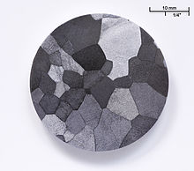

Vanadium
|  | |||||||||||||||||||||||||||||||||||||||||||||||||||||||||||||||||||||||||||||||||||||||||||||||||||||||||||||||||||||||||||||||||||||||||||||||||||||||||||||||||||||||||||||||||||||||||||||||||||||||||||||||||||||||||||||||||||||
| General properties | |||||||||||||||||||||||||||||||||||||||||||||||||||||||||||||||||||||||||||||||||||||||||||||||||||||||||||||||||||||||||||||||||||||||||||||||||||||||||||||||||||||||||||||||||||||||||||||||||||||||||||||||||||||||||||||||||||||
|---|---|---|---|---|---|---|---|---|---|---|---|---|---|---|---|---|---|---|---|---|---|---|---|---|---|---|---|---|---|---|---|---|---|---|---|---|---|---|---|---|---|---|---|---|---|---|---|---|---|---|---|---|---|---|---|---|---|---|---|---|---|---|---|---|---|---|---|---|---|---|---|---|---|---|---|---|---|---|---|---|---|---|---|---|---|---|---|---|---|---|---|---|---|---|---|---|---|---|---|---|---|---|---|---|---|---|---|---|---|---|---|---|---|---|---|---|---|---|---|---|---|---|---|---|---|---|---|---|---|---|---|---|---|---|---|---|---|---|---|---|---|---|---|---|---|---|---|---|---|---|---|---|---|---|---|---|---|---|---|---|---|---|---|---|---|---|---|---|---|---|---|---|---|---|---|---|---|---|---|---|---|---|---|---|---|---|---|---|---|---|---|---|---|---|---|---|---|---|---|---|---|---|---|---|---|---|---|---|---|---|---|---|---|---|---|---|---|---|---|---|---|---|---|---|---|---|---|---|---|
| Name, symbol | vanadium, V | ||||||||||||||||||||||||||||||||||||||||||||||||||||||||||||||||||||||||||||||||||||||||||||||||||||||||||||||||||||||||||||||||||||||||||||||||||||||||||||||||||||||||||||||||||||||||||||||||||||||||||||||||||||||||||||||||||||
| Pronunciation | /vəˈneɪdiəm/ və-NAY-dee-əm |
||||||||||||||||||||||||||||||||||||||||||||||||||||||||||||||||||||||||||||||||||||||||||||||||||||||||||||||||||||||||||||||||||||||||||||||||||||||||||||||||||||||||||||||||||||||||||||||||||||||||||||||||||||||||||||||||||||
| Appearance | blue-silver-grey metal | ||||||||||||||||||||||||||||||||||||||||||||||||||||||||||||||||||||||||||||||||||||||||||||||||||||||||||||||||||||||||||||||||||||||||||||||||||||||||||||||||||||||||||||||||||||||||||||||||||||||||||||||||||||||||||||||||||||
| Vanadium in the periodic table | |||||||||||||||||||||||||||||||||||||||||||||||||||||||||||||||||||||||||||||||||||||||||||||||||||||||||||||||||||||||||||||||||||||||||||||||||||||||||||||||||||||||||||||||||||||||||||||||||||||||||||||||||||||||||||||||||||||
|
|||||||||||||||||||||||||||||||||||||||||||||||||||||||||||||||||||||||||||||||||||||||||||||||||||||||||||||||||||||||||||||||||||||||||||||||||||||||||||||||||||||||||||||||||||||||||||||||||||||||||||||||||||||||||||||||||||||
| Atomic number | 23 | ||||||||||||||||||||||||||||||||||||||||||||||||||||||||||||||||||||||||||||||||||||||||||||||||||||||||||||||||||||||||||||||||||||||||||||||||||||||||||||||||||||||||||||||||||||||||||||||||||||||||||||||||||||||||||||||||||||
| Standard atomic weight (±) | 50.9415(1)[1] | ||||||||||||||||||||||||||||||||||||||||||||||||||||||||||||||||||||||||||||||||||||||||||||||||||||||||||||||||||||||||||||||||||||||||||||||||||||||||||||||||||||||||||||||||||||||||||||||||||||||||||||||||||||||||||||||||||||
| Element category | transition metal | ||||||||||||||||||||||||||||||||||||||||||||||||||||||||||||||||||||||||||||||||||||||||||||||||||||||||||||||||||||||||||||||||||||||||||||||||||||||||||||||||||||||||||||||||||||||||||||||||||||||||||||||||||||||||||||||||||||
| Group, block | group 5, d-block | ||||||||||||||||||||||||||||||||||||||||||||||||||||||||||||||||||||||||||||||||||||||||||||||||||||||||||||||||||||||||||||||||||||||||||||||||||||||||||||||||||||||||||||||||||||||||||||||||||||||||||||||||||||||||||||||||||||
| Period | period 4 | ||||||||||||||||||||||||||||||||||||||||||||||||||||||||||||||||||||||||||||||||||||||||||||||||||||||||||||||||||||||||||||||||||||||||||||||||||||||||||||||||||||||||||||||||||||||||||||||||||||||||||||||||||||||||||||||||||||
| Electron configuration | [Ar] 3d3 4s2 | ||||||||||||||||||||||||||||||||||||||||||||||||||||||||||||||||||||||||||||||||||||||||||||||||||||||||||||||||||||||||||||||||||||||||||||||||||||||||||||||||||||||||||||||||||||||||||||||||||||||||||||||||||||||||||||||||||||
| per shell | 2, 8, 11, 2 | ||||||||||||||||||||||||||||||||||||||||||||||||||||||||||||||||||||||||||||||||||||||||||||||||||||||||||||||||||||||||||||||||||||||||||||||||||||||||||||||||||||||||||||||||||||||||||||||||||||||||||||||||||||||||||||||||||||
| Physical properties | |||||||||||||||||||||||||||||||||||||||||||||||||||||||||||||||||||||||||||||||||||||||||||||||||||||||||||||||||||||||||||||||||||||||||||||||||||||||||||||||||||||||||||||||||||||||||||||||||||||||||||||||||||||||||||||||||||||
| Phase | solid | ||||||||||||||||||||||||||||||||||||||||||||||||||||||||||||||||||||||||||||||||||||||||||||||||||||||||||||||||||||||||||||||||||||||||||||||||||||||||||||||||||||||||||||||||||||||||||||||||||||||||||||||||||||||||||||||||||||
| Melting point | 2183 K (1910 °C, 3470 °F) | ||||||||||||||||||||||||||||||||||||||||||||||||||||||||||||||||||||||||||||||||||||||||||||||||||||||||||||||||||||||||||||||||||||||||||||||||||||||||||||||||||||||||||||||||||||||||||||||||||||||||||||||||||||||||||||||||||||
| Boiling point | 3680 K (3407 °C, 6165 °F) | ||||||||||||||||||||||||||||||||||||||||||||||||||||||||||||||||||||||||||||||||||||||||||||||||||||||||||||||||||||||||||||||||||||||||||||||||||||||||||||||||||||||||||||||||||||||||||||||||||||||||||||||||||||||||||||||||||||
| Density near r.t. | 6.0 g·cm−3 | ||||||||||||||||||||||||||||||||||||||||||||||||||||||||||||||||||||||||||||||||||||||||||||||||||||||||||||||||||||||||||||||||||||||||||||||||||||||||||||||||||||||||||||||||||||||||||||||||||||||||||||||||||||||||||||||||||||
| when liquid, at m.p. | 5.5 g·cm−3 | ||||||||||||||||||||||||||||||||||||||||||||||||||||||||||||||||||||||||||||||||||||||||||||||||||||||||||||||||||||||||||||||||||||||||||||||||||||||||||||||||||||||||||||||||||||||||||||||||||||||||||||||||||||||||||||||||||||
| Heat of fusion | 21.5 kJ·mol−1 | ||||||||||||||||||||||||||||||||||||||||||||||||||||||||||||||||||||||||||||||||||||||||||||||||||||||||||||||||||||||||||||||||||||||||||||||||||||||||||||||||||||||||||||||||||||||||||||||||||||||||||||||||||||||||||||||||||||
| Heat of vaporization | 444 kJ·mol−1 | ||||||||||||||||||||||||||||||||||||||||||||||||||||||||||||||||||||||||||||||||||||||||||||||||||||||||||||||||||||||||||||||||||||||||||||||||||||||||||||||||||||||||||||||||||||||||||||||||||||||||||||||||||||||||||||||||||||
| Molar heat capacity | 24.89 J·mol−1·K−1 | ||||||||||||||||||||||||||||||||||||||||||||||||||||||||||||||||||||||||||||||||||||||||||||||||||||||||||||||||||||||||||||||||||||||||||||||||||||||||||||||||||||||||||||||||||||||||||||||||||||||||||||||||||||||||||||||||||||
vapor pressure
|
|||||||||||||||||||||||||||||||||||||||||||||||||||||||||||||||||||||||||||||||||||||||||||||||||||||||||||||||||||||||||||||||||||||||||||||||||||||||||||||||||||||||||||||||||||||||||||||||||||||||||||||||||||||||||||||||||||||
| Atomic properties | |||||||||||||||||||||||||||||||||||||||||||||||||||||||||||||||||||||||||||||||||||||||||||||||||||||||||||||||||||||||||||||||||||||||||||||||||||||||||||||||||||||||||||||||||||||||||||||||||||||||||||||||||||||||||||||||||||||
| Oxidation states | 5, 4, 3, 2, 1, −1 (an amphoteric oxide) | ||||||||||||||||||||||||||||||||||||||||||||||||||||||||||||||||||||||||||||||||||||||||||||||||||||||||||||||||||||||||||||||||||||||||||||||||||||||||||||||||||||||||||||||||||||||||||||||||||||||||||||||||||||||||||||||||||||
| Electronegativity | Pauling scale: 1.63 | ||||||||||||||||||||||||||||||||||||||||||||||||||||||||||||||||||||||||||||||||||||||||||||||||||||||||||||||||||||||||||||||||||||||||||||||||||||||||||||||||||||||||||||||||||||||||||||||||||||||||||||||||||||||||||||||||||||
| Ionization energies | 1st: 650.9 kJ·mol−1 2nd: 1414 kJ·mol−1 3rd: 2830 kJ·mol−1 (more) |
||||||||||||||||||||||||||||||||||||||||||||||||||||||||||||||||||||||||||||||||||||||||||||||||||||||||||||||||||||||||||||||||||||||||||||||||||||||||||||||||||||||||||||||||||||||||||||||||||||||||||||||||||||||||||||||||||||
| Atomic radius | empirical: 134 pm | ||||||||||||||||||||||||||||||||||||||||||||||||||||||||||||||||||||||||||||||||||||||||||||||||||||||||||||||||||||||||||||||||||||||||||||||||||||||||||||||||||||||||||||||||||||||||||||||||||||||||||||||||||||||||||||||||||||
| Covalent radius | 153±8 pm | ||||||||||||||||||||||||||||||||||||||||||||||||||||||||||||||||||||||||||||||||||||||||||||||||||||||||||||||||||||||||||||||||||||||||||||||||||||||||||||||||||||||||||||||||||||||||||||||||||||||||||||||||||||||||||||||||||||
| Miscellanea | |||||||||||||||||||||||||||||||||||||||||||||||||||||||||||||||||||||||||||||||||||||||||||||||||||||||||||||||||||||||||||||||||||||||||||||||||||||||||||||||||||||||||||||||||||||||||||||||||||||||||||||||||||||||||||||||||||||
| Crystal structure | body-centered cubic (bcc) | ||||||||||||||||||||||||||||||||||||||||||||||||||||||||||||||||||||||||||||||||||||||||||||||||||||||||||||||||||||||||||||||||||||||||||||||||||||||||||||||||||||||||||||||||||||||||||||||||||||||||||||||||||||||||||||||||||||
| Speed of sound thin rod | 4560 m·s−1 (at 20 °C) | ||||||||||||||||||||||||||||||||||||||||||||||||||||||||||||||||||||||||||||||||||||||||||||||||||||||||||||||||||||||||||||||||||||||||||||||||||||||||||||||||||||||||||||||||||||||||||||||||||||||||||||||||||||||||||||||||||||
| Thermal expansion | 8.4 µm·m−1·K−1 (at 25 °C) | ||||||||||||||||||||||||||||||||||||||||||||||||||||||||||||||||||||||||||||||||||||||||||||||||||||||||||||||||||||||||||||||||||||||||||||||||||||||||||||||||||||||||||||||||||||||||||||||||||||||||||||||||||||||||||||||||||||
| Thermal conductivity | 30.7 W·m−1·K−1 | ||||||||||||||||||||||||||||||||||||||||||||||||||||||||||||||||||||||||||||||||||||||||||||||||||||||||||||||||||||||||||||||||||||||||||||||||||||||||||||||||||||||||||||||||||||||||||||||||||||||||||||||||||||||||||||||||||||
| Electrical resistivity | 197 nΩ·m (at 20 °C) | ||||||||||||||||||||||||||||||||||||||||||||||||||||||||||||||||||||||||||||||||||||||||||||||||||||||||||||||||||||||||||||||||||||||||||||||||||||||||||||||||||||||||||||||||||||||||||||||||||||||||||||||||||||||||||||||||||||
| Magnetic ordering | paramagnetic | ||||||||||||||||||||||||||||||||||||||||||||||||||||||||||||||||||||||||||||||||||||||||||||||||||||||||||||||||||||||||||||||||||||||||||||||||||||||||||||||||||||||||||||||||||||||||||||||||||||||||||||||||||||||||||||||||||||
| Young's modulus | 128 GPa | ||||||||||||||||||||||||||||||||||||||||||||||||||||||||||||||||||||||||||||||||||||||||||||||||||||||||||||||||||||||||||||||||||||||||||||||||||||||||||||||||||||||||||||||||||||||||||||||||||||||||||||||||||||||||||||||||||||
| Shear modulus | 47 GPa | ||||||||||||||||||||||||||||||||||||||||||||||||||||||||||||||||||||||||||||||||||||||||||||||||||||||||||||||||||||||||||||||||||||||||||||||||||||||||||||||||||||||||||||||||||||||||||||||||||||||||||||||||||||||||||||||||||||
| Bulk modulus | 160 GPa | ||||||||||||||||||||||||||||||||||||||||||||||||||||||||||||||||||||||||||||||||||||||||||||||||||||||||||||||||||||||||||||||||||||||||||||||||||||||||||||||||||||||||||||||||||||||||||||||||||||||||||||||||||||||||||||||||||||
| Poisson ratio | 0.37 | ||||||||||||||||||||||||||||||||||||||||||||||||||||||||||||||||||||||||||||||||||||||||||||||||||||||||||||||||||||||||||||||||||||||||||||||||||||||||||||||||||||||||||||||||||||||||||||||||||||||||||||||||||||||||||||||||||||
| Mohs hardness | 6.7 | ||||||||||||||||||||||||||||||||||||||||||||||||||||||||||||||||||||||||||||||||||||||||||||||||||||||||||||||||||||||||||||||||||||||||||||||||||||||||||||||||||||||||||||||||||||||||||||||||||||||||||||||||||||||||||||||||||||
| Vickers hardness | 628–640 MPa | ||||||||||||||||||||||||||||||||||||||||||||||||||||||||||||||||||||||||||||||||||||||||||||||||||||||||||||||||||||||||||||||||||||||||||||||||||||||||||||||||||||||||||||||||||||||||||||||||||||||||||||||||||||||||||||||||||||
| Brinell hardness | 600–742 MPa | ||||||||||||||||||||||||||||||||||||||||||||||||||||||||||||||||||||||||||||||||||||||||||||||||||||||||||||||||||||||||||||||||||||||||||||||||||||||||||||||||||||||||||||||||||||||||||||||||||||||||||||||||||||||||||||||||||||
| CAS Registry Number | 7440-62-2 | ||||||||||||||||||||||||||||||||||||||||||||||||||||||||||||||||||||||||||||||||||||||||||||||||||||||||||||||||||||||||||||||||||||||||||||||||||||||||||||||||||||||||||||||||||||||||||||||||||||||||||||||||||||||||||||||||||||
| History | |||||||||||||||||||||||||||||||||||||||||||||||||||||||||||||||||||||||||||||||||||||||||||||||||||||||||||||||||||||||||||||||||||||||||||||||||||||||||||||||||||||||||||||||||||||||||||||||||||||||||||||||||||||||||||||||||||||
| Discovery | Andrés Manuel del Río (1801) | ||||||||||||||||||||||||||||||||||||||||||||||||||||||||||||||||||||||||||||||||||||||||||||||||||||||||||||||||||||||||||||||||||||||||||||||||||||||||||||||||||||||||||||||||||||||||||||||||||||||||||||||||||||||||||||||||||||
| First isolation | Nils Gabriel Sefström (1830) | ||||||||||||||||||||||||||||||||||||||||||||||||||||||||||||||||||||||||||||||||||||||||||||||||||||||||||||||||||||||||||||||||||||||||||||||||||||||||||||||||||||||||||||||||||||||||||||||||||||||||||||||||||||||||||||||||||||
| Named by | Nils Gabriel Sefström (1830) | ||||||||||||||||||||||||||||||||||||||||||||||||||||||||||||||||||||||||||||||||||||||||||||||||||||||||||||||||||||||||||||||||||||||||||||||||||||||||||||||||||||||||||||||||||||||||||||||||||||||||||||||||||||||||||||||||||||
| Most stable isotopes | |||||||||||||||||||||||||||||||||||||||||||||||||||||||||||||||||||||||||||||||||||||||||||||||||||||||||||||||||||||||||||||||||||||||||||||||||||||||||||||||||||||||||||||||||||||||||||||||||||||||||||||||||||||||||||||||||||||
|
|||||||||||||||||||||||||||||||||||||||||||||||||||||||||||||||||||||||||||||||||||||||||||||||||||||||||||||||||||||||||||||||||||||||||||||||||||||||||||||||||||||||||||||||||||||||||||||||||||||||||||||||||||||||||||||||||||||
{kind=link}
{kind=link}
Vanadium is a chemical element with symbol V and atomic number 23. It is a hard, silvery gray, ductile and malleable transition metal. The element is found only in chemically combined form in nature, but once isolated artificially, the formation of an oxide layer stabilizes the free metal somewhat against further oxidation.
Andrés Manuel del Río discovered compounds of vanadium in 1801 in Mexico by analyzing a new lead-bearing mineral he called "brown lead," and presumed its qualities were due to the presence of a new element, which he named erythronium (Greek for "red") since, upon heating, most of its salts turned from their initial color to red. Four years later, however, he was (erroneously) convinced by other scientists that erythronium was identical to chromium. Chlorides of vanadium were generated in 1830 by Nils Gabriel Sefström who thereby proved that a new element was involved, which he named "vanadium" after the Scandinavian goddess of beauty and fertility, Vanadís (Freyja). Both names were attributed to the wide range of colors found in vanadium compounds. Del Rio's lead mineral was later renamed vanadinite for its vanadium content. In 1867 Henry Enfield Roscoe obtained the pure element.
Vanadium occurs naturally in about 65 different minerals and in fossil fuel deposits. It is produced in China and Russia from steel smelter slag; other countries produce it either from the flue dust of heavy oil, or as a byproduct of uranium mining. It is mainly used to produce specialty steel alloys such as high-speed tool steels. The most important industrial vanadium compound, vanadium pentoxide, is used as a catalyst for the production of sulfuric acid.
Large amounts of vanadium ions are found in a few organisms, possibly as a toxin. The oxide and some other salts of vanadium have moderate toxicity. Particularly in the ocean, vanadium is used by some life forms as an active center of enzymes, such as the vanadium bromoperoxidase of some ocean algae. Vanadium is probably a micronutrient in mammals, including humans, but its precise role in this regard is unknown.[citation needed]
Contents
[hide]History[edit]
Vanadium was discovered by Andrés Manuel del Río, a Spanish-Mexican mineralogist, in 1801. Del Río extracted the element from a sample of Mexican "brown lead" ore, later named vanadinite. He found that its salts exhibit a wide variety of colors, and as a result he named the element panchromium (Greek: παγχρώμιο "all colors"). Later, Del Río renamed the element erythronium (Greek: ερυθρός "red") as most of its salts turned red upon heating. In 1805, the French chemist Hippolyte Victor Collet-Descotils, backed by del Río's friend Baron Alexander von Humboldt, incorrectly declared that del Río's new element was only an impure sample of chromium. Del Río accepted Collet-Descotils' statement and retracted his claim.[2]
In 1831, the Swedish chemist Nils Gabriel Sefström rediscovered the element in a new oxide he found while working with iron ores. Later that same year, Friedrich Wöhler confirmed del Río's earlier work.[3] Sefström chose a name beginning with V, which had not been assigned to any element yet. He called the element vanadium after Old Norse Vanadís (another name for the Norse Vanr goddess Freyja, whose facets include connections to beauty and fertility), because of the many beautifully colored chemical compounds it produces.[3] In 1831, the geologist George William Featherstonhaugh suggested that vanadium should be renamed "rionium" after del Río, but this suggestion was not followed.[4]
{kind=link}
The isolation of vanadium metal proved difficult. In 1831, Berzelius reported the production of the metal, but Henry Enfield Roscoe showed that Berzelius had in fact produced the nitride, vanadium nitride (VN). Roscoe eventually produced the metal in 1867 by reduction of vanadium(II) chloride, VCl2, with hydrogen.[5] In 1927, pure vanadium was produced by reducing vanadium pentoxide with calcium.[6] The first large-scale industrial use of vanadium in steels was found in the chassis of the Ford Model T, inspired by French race cars. Vanadium steel allowed for reduced weight while simultaneously increasing tensile strength.[7]
German chemist Martin Henze discovered vanadium in the blood cells (or coelomic cells) of Ascidiacea (sea squirts) in 1911.[8][9]
Characteristics[edit]
{kind=link}
Vanadium is a medium-hard, ductile, steel-blue metal. Some sources describe vanadium as "soft", perhaps because it is ductile, malleable and not brittle.[10][11] Vanadium is harder than most metals and steels (see Hardnesses of the elements (data page) and iron). It has good resistance to corrosion and it is stable against alkalis and sulfuric and hydrochloric acids.[12] It is oxidized in air at about 933 K (660 °C, 1220 °F), although an oxide layer forms even at room temperature.
Isotopes[edit]
Naturally occurring vanadium is composed of one stable isotope, 51V, and one radioactive isotope, 50V. The latter has a half-life of 1.5×1017 years and a natural abundance of 0.25%. 51V has a nuclear spin of 7/2, which is useful for NMR spectroscopy.[13] Twenty-four artificial radioisotopes have been characterized, ranging in mass number from 40 to 65. The most stable of these isotopes are 49V, with a half-life of 330 days, and 48V, with a half-life of 16.0 days. The remaining radioactive isotopes have half-lives shorter than an hour, most below 10 seconds. At least four isotopes have metastable excited states.[13] Electron capture is the main decay mode for isotopes lighter than 51V. For the heavier ones, the most common mode is beta decay. The electron capture reactions lead to the formation of element 22 (titanium) isotopes, while beta decay leads to element 24 (chromium) isotopes.
Compounds[edit]
{kind=link}
The chemistry of vanadium is noteworthy for the accessibility of the four adjacent oxidation states 2-5. In aqueous solution, vanadium forms metal aquo complexes the colours are lilac [V(H2O)6]2+, green [V(H2O)6]3+, blue [VO(H2O)5]2+, yellow VO3−. Vanadium(II) compounds are reducing agents, and vanadium(V) compounds are oxidizing agents. Vanadium(IV) compounds often exist as vanadyl derivatives which contain the VO2+ center.[12]
Ammonium vanadate(V) (NH4VO3) can be successively reduced with elemental zinc
to obtain the different colors of vanadium in these four oxidation
states. Lower oxidation states occur in compounds such as V(CO)6, [V(CO)
6]−
and substituted derivatives.[12]
The most commercially important compound is vanadium pentoxide. It is used as a catalyst for the production of sulfuric acid.[12] This compound oxidizes sulfur dioxide (SO
2) to the trioxide (SO
3). In this redox reaction, sulfur is oxidized from +4 to +6, and vanadium is reduced from +5 to +4:
- V2O5 + SO2 → 2 VO2 + SO3
The catalyst is regenerated by oxidation with air:
- 2 VO2 + O2 → V2O5
Similar oxidations are used in the production of maleic anhydride, phthalic anhydride, and several other bulk organic compounds.[14]
Oxyanions[edit]
{kind=link}
In aqueous solution, vanadium(V) forms an extensive family of oxyanions. The interrelationships within this family are described by the predominance diagram, shows at least 11 species, depending on pH and concentration.[15] The tetrahedral orthovanadate ion, VO3−
4, is the principal species present at pH 12-14. Analogies
exist between orthovanadate and orthophosphate owing to the similarity
in size and charge of phosphorus(V) and vanadium(V). Orthovanadate VO3−
4 is used in protein crystallography[16] to study the biochemistry of phosphate.[17] The tetrathiovanadate [VS4]3− is analogous to the orthovanadate ion.[18]
At lower pH's, the monomer [HVO4]2− and dimer [V2O7]− are formed, with the monomer predominant at vanadium concentration of less than ca. 10−2M (pV > 2; pV is equal to minus the logarithm of the total vanadium concentration/M). The formation of the divanadate ion is analogous to the formation of the dichromate ion. As the pH is reduced, further protonation and condensation to polyvanadates occur: at pH 4-6 [H2VO4]− is predominant at pV greater than ca. 4, while at higher concentrations trimers and tetramers are formed. Between pH 2-4 decavanadate predominates, its formation from orthovanadate is represented by this condensation reaction:
- 10 [VO4]3− + 24 H+ → [V10O28]6− + 12 H2O
In decavanadate, each V(V) center is surrounded by six oxide ligands.[12] Vanadic acid, H3VO4 exists only a very low concentrations because protonation of the tetrahedral species [H2VO4]− results in the preferential formation of the octahedral [VO2(H2O)4]+ species. In strongly acidic solutions, pH<2. [VO2(H2O)4]+ is the predominant species, while the oxide V2O5 precipitates from solution at high concentrations. The oxide is formally the inorganic anhydride of vanadic acid. The structures of many vanadate compounds have been characterized by X-ray crystallography.
{kind=link}
The Pourbaix diagram for vanadium in water, which shows the redox potentials between various vanadium species in different oxidation states is also complex.[19]
Vanadium(V) also forms various peroxo complexes, most notably in the active site of the vanadium-containing bromoperoxidase enzymes. The species VO(O)2(H2O)4+ is stable in acidic solutions. In alkaline solutions species with 2, 3 and 4 peroxide groups are known; the last forms violet salts with the formula M3V(O2)4 nH2O (M = Li, Na, etc.), in which the vanadium has an 8-coordinate dodecahedral structure.[20][21]
Halide derivatives[edit]
Twelve binary halides, compounds with the formula VXn, are known. VI4, VCl5, VBr5, and VI5 do not exist or are extremely unstable. In combination with other reagents, VCl4 is used as a catalyst for polymerization of dienes. Like all binary halides, those of vanadium are Lewis acidic, especially those of V(IV) and V(V). Many of the halides form octahedral complexes with the formula VXnL6−n (X = halide; L = other ligand).
Many vanadium oxyhalides (formula VOmXn) are known.[22] The oxytrichloride and oxytrifluoride, VOF3) and VOCl3) are the most widely studied. Akin to POCl3, they are volatile, adopt tetrahedral structures in the gas phase, and are Lewis acidic.
Coordination compounds[edit]
{kind=link}
Complexes of vanadium(II) and (III) are relatively exchange inert and reducing. Those of V(IV) and V(V) are oxidants. Vanadium ion is rather large and some complexes achieve coordination numbers greater than 6, as is the case in [V(CN)7]4−. The coordination chemistry of V4+ is dominated by the vanadyl center, VO2+, which binds four other ligands strongly and one weakly (the one trans to the vanadyl center). An example is vanadyl acetylacetonate (V(O)(O2C5H7)2). In this complex, the vanadium is 5-coordinate, square pyramidal, meaning that a sixth ligand, such as pyridine, may be attached, though the association constant of this process is small. Many 5-coordinate vanadyl complexes have a trigonal bypyramidal geometry, such as VOCl2(NMe3)2.[23] The coordination chemistry of V5+ is dominated by the polyoxovanadates, such as decavanadate.
Organometallic compounds[edit]
Organometallic chemistry of vanadium is well developed, although they are mainly only academic significance. Vanadocene dichloride is a versatile starting reagent and even finds some applications in organic chemistry.[24] Vanadium carbonyl, V(CO)6, is a rare example of a paramagnetic metal carbonyl. Reduction yields V(CO)−
6 (isoelectronic with Cr(CO)6), which may be further reduced with sodium in liquid ammonia to yield V(CO)3−
5 (isoelectronic with Fe(CO)5).[25][26]
Occurrence[edit]
{kind=link}
Metallic vanadium is not found in nature, but vanadium compounds occur naturally in about 65 different minerals. Economically significant examples include patronite (VS4),[27] vanadinite (Pb5(VO4)3Cl), and carnotite (K2(UO2)2(VO4)2·3H2O). Much of the world's vanadium production is sourced from vanadium-bearing magnetite found in ultramafic gabbro bodies. Vanadium is mined mostly in South Africa, north-western China, and eastern Russia. In 2010 these three countries mined more than 98% of the 56,000 tonnes of produced vanadium.[28]
Vanadium is also present in bauxite and in fossil fuel deposits such as crude oil, coal, oil shale and tar sands. In crude oil, concentrations up to 1200 ppm have been reported. When such oil products are burned, the traces of vanadium may initiate corrosion in motors and boilers.[29] An estimated 110,000 tonnes of vanadium per year are released into the atmosphere by burning fossil fuels.[30] Vanadium has also been detected spectroscopically in light from the Sun and some other stars.[31]
Production[edit]
{kind=link}
{kind=link}
{kind=link}
Most vanadium is used as an alloy called ferrovanadium as an additive to improve steels. Ferrovanadium is produced directly by reducing a mixture of vanadium oxide, iron oxides and iron in an electric furnace. The vanadium ends up in pig iron produced from vanadium bearing magnetite. Depending on the ore used, the slag contains up to 25% of vanadium.[32]
Vanadium metal is obtained via a multistep process that begins with the roasting of crushed ore with NaCl or Na2CO3 at about 850 °C to give sodium metavanadate (NaVO3). An aqueous extract of this solid is acidified to give "red cake", a polyvanadate salt, which is reduced with calcium metal. As an alternative for small-scale production, vanadium pentoxide is reduced with hydrogen or magnesium. Many other methods are also in use, in all of which vanadium is produced as a byproduct of other processes.[32] Purification of vanadium is possible by the crystal bar process developed by Anton Eduard van Arkel and Jan Hendrik de Boer in 1925. It involves the formation of the metal iodide, in this example vanadium(III) iodide, and the subsequent decomposition to yield pure metal.[33]
- 2 V + 3 I2
 2 VI3
2 VI3
Applications[edit]
{kind=link}
Alloys[edit]
Approximately 85% of vanadium produced is used as ferrovanadium or as a steel additive.[32] The considerable increase of strength in steel containing small amounts of vanadium was discovered in the beginning of the 20th century. Vanadium forms stable nitrides and carbides, resulting in a significant increase in the strength of the steel.[34] From that time on vanadium steel was used for applications in axles, bicycle frames, crankshafts, gears, and other critical components. There are two groups of vanadium containing steel alloy groups. Vanadium high-carbon steel alloys contain 0.15% to 0.25% vanadium and high speed tool steels (HSS) have a vanadium content of 1% to 5%. For high speed tool steels, a hardness above HRC 60 can be achieved. HSS steel is used in surgical instruments and tools.[35] Some powder metallurgic alloys can contain up to 18% percent vanadium. The high content of vanadium carbides in those alloys increases the wear resistivity significantly. One application for those alloys are tools and knives.[36]
Vanadium stabilizes the beta form of titanium and increases the strength and temperature stability of titanium. Mixed with aluminium in titanium alloys it is used in jet engines, high-speed airframes and dental implants. One of the common alloys is Titanium 6AL-4V, a titanium alloy with 6% aluminium and 4% vanadium.[37]
Other uses[edit]
{kind=link}
Vanadium is compatible with iron and titanium, therefore vanadium foil is used in cladding titanium to steel.[38] The moderate thermal neutron-capture cross-section and the short half-life of the isotopes produced by neutron capture makes vanadium a suitable material for the inner structure of a fusion reactor.[39][40] Several vanadium alloys show superconducting behavior. The first A15 phase superconductor was a vanadium compound, V3Si, which was discovered in 1952.[41] Vanadium-gallium tape is used in superconducting magnets (17.5 teslas or 175,000 gauss). The structure of the superconducting A15 phase of V3Ga is similar to that of the more common Nb3Sn and Nb3Ti.[42]
The most common oxide of vanadium, vanadium pentoxide V2O5, is used as a catalyst in manufacturing sulfuric acid by the contact process[43] and as an oxidizer in maleic anhydride production.[44] Vanadium pentoxide is also used in making ceramics.[45] Another oxide of vanadium, vanadium dioxide VO2, is used in the production of glass coatings, which blocks infrared radiation (and not visible light) at a specific temperature.[46] Vanadium oxide can be used to induce color centers in corundum to create simulated alexandrite jewelry, although alexandrite in nature is a chrysoberyl.[47] The possibility to use vanadium redox couples in both half-cells, thereby eliminating the problem of cross contamination by diffusion of ions across the membrane is the advantage of vanadium redox rechargeable batteries.[48] Vanadate can be used for protecting steel against rust and corrosion by electrochemical conversion coating.[49] Lithium vanadium oxide has been proposed for use as a high energy density anode for lithium ion batteries, at 745 Wh/L when paired with a lithium cobalt oxide cathode.[50] It has been proposed by some researchers that a small amount, 40 to 270 ppm, of vanadium in Wootz steel and Damascus steel, significantly improves the strength of the material, although it is unclear what the source of the vanadium was.[51] Lithium vanadium phosphate has been proposed for a new battery as well,and is very commercially applicable because phosphates are inexpensive and vanadium makes the battery very energy dense.
Biological role[edit]
Vanadium plays a very limited role in human biology.[52] It is more important in marine environments than terrestrial ones.[53]
{kind=link}
{kind=link}
{kind=link}
Vanadoenzymes[edit]
A number of species of marine algae produce vanadium-containing vanadium bromoperoxidase as well as the closely related chloroperoxidase (which may use a heme or vanadium cofactor) and iodoperoxidases. The bromoperoxidase produces an estimated 1–2 million tons of bromoform and 56,000 tons of bromomethane annually.[54] Most naturally occurring organobromine compounds, accounting arise by the action of this enzyme.[55] They catalyse the following reaction (R-H is hydrocarbon substrate):
- R-H + Br− + H2O2 → R-Br + H2O + OH−
A vanadium nitrogenase is used by some nitrogen-fixing micro-organisms, such as Azotobacter. In this role vanadium replaces more common molybdenum or iron, and gives the nitrogenase slightly different properties.[56]
Vanadium accumulation in tunicates and ascidians[edit]
Vanadium is essential to ascidians and tunicates, where it is stored in the highly acidified vacuoles of certain blood cell types, designated vanadocytes. Vanabins (vanadium binding proteins) have been identified in the cytoplasm of such cells. The concentration of vanadium in these ascidians' blood is up to ten million times higher[specify][57][58] than the concentration of vanadium in surrounding seawater, which normally contains 1 to 2 µg/l.[59][60] The function of this vanadium concentration system, and these vanadium-containing proteins, is still unknown but the vanadocytes are later deposited just under the outer surface of the tunic where their presence may deter predation.[61]
Fungi[edit]
Several species of macrofungi, namely Amanita muscaria and related species, accumulate vanadium (up to 500 mg/kg in dry weight). Vanadium is present in the coordination complex amavadin,[62] in fungal fruit-bodies. However, the biological importance of the accumulation process is unknown.[63][64] Toxin functions or peroxidase enzyme functions have been suggested.
Mammals and birds[edit]
Deficiencies in vanadium result in reduced growth and impaired reproduction in rats and chickens.[65] Vanadium is a relatively controversial dietary supplement, used primarily for increasing insulin sensitivity[66] and body-building. Whether it works for the latter purpose has not been proven; some evidence suggests that athletes who take it are merely experiencing a placebo effect.[67] Vanadyl sulfate may improve glucose control in people with type 2 diabetes.[68][69][70][71][72] Decavanadate and oxovanadates appear to play a role in a variety of biochemical processes, such as those relating to oxidative stress.[73]
Safety[edit]
All vanadium compounds should be considered toxic. Tetravalent VOSO4 has been reported to be over 5 times more toxic than trivalent V2O3.[74] The Occupational Safety and Health Administration (OSHA) has set an exposure limit of 0.05 mg/m3 for vanadium pentoxide dust and 0.1 mg/m3 for vanadium pentoxide fumes in workplace air for an 8-hour workday, 40-hour work week.[75] The National Institute for Occupational Safety and Health (NIOSH) has recommended that 35 mg/m3 of vanadium be considered immediately dangerous to life and health. This is the exposure level of a chemical that is likely to cause permanent health problems or death.[75]
Vanadium compounds are poorly absorbed through the gastrointestinal system. Inhalation exposures to vanadium and vanadium compounds result primarily in adverse effects on the respiratory system.[76][77][78] Quantitative data are, however, insufficient to derive a subchronic or chronic inhalation reference dose. Other effects have been reported after oral or inhalation exposures on blood parameters,[79][80] on liver,[81] on neurological development in rats,[82] and other organs.[83]
There is little evidence that vanadium or vanadium compounds are reproductive toxins or teratogens. Vanadium pentoxide was reported to be carcinogenic in male rats and male and female mice by inhalation in an NTP study,[77] although the interpretation of the results has recently been disputed.[84] Vanadium has not been classified as to carcinogenicity by the United States Environmental Protection Agency.[85]
Vanadium traces in diesel fuels present a corrosion hazard; it is the main fuel component influencing high temperature corrosion. During combustion, it oxidizes and reacts with sodium and sulfur, yielding vanadate compounds with melting points down to 530 °C, which attack the passivation layer on steel, rendering it susceptible to corrosion. The solid vanadium compounds also cause abrasion of engine components.[86][87]
See also[edit]
- Vanadium redox battery
- Grid energy storage
- Flow battery
- Vanadium carbide
- Vanadium(V) oxide
- Vanadium tetrachloride
References[edit]
- Jump up ^ Standard Atomic Weights 2013. Commission on Isotopic Abundances and Atomic Weights
- Jump up ^ Cintas, Pedro (2004). "The Road to Chemical Names and Eponyms: Discovery, Priority, and Credit". Angewandte Chemie International Edition 43 (44): 5888–94. doi:10.1002/anie.200330074. PMID 15376297.
- ^ Jump up to: a b Sefström, N. G. (1831). "Ueber das Vanadin, ein neues Metall, gefunden im Stangeneisen von Eckersholm, einer Eisenhütte, die ihr Erz von Taberg in Småland bezieht". Annalen der Physik und Chemie 97: 43. Bibcode:1831AnP....97...43S. doi:10.1002/andp.18310970103.
- Jump up ^ Featherstonhaugh, George William (1831). The Monthly American Journal of Geology and Natural Science: 69 https://archive.org/stream/monthlyamericanj11831phil#page/68/mode/2up/search/rionium. Missing or empty
|title=(help) - Jump up ^ Roscoe, Henry E. (1869–1870). "Researches on Vanadium. Part II". Proceedings of the Royal Society of London 18 (114–122): 37. doi:10.1098/rspl.1869.0012.
- Jump up ^ Marden, J. W.; Rich, M. N. (1927). "Vanadium". Industrial and Engineering Chemistry 19 (7): 786. doi:10.1021/ie50211a012.
- Jump up ^ Betz, Frederick (2003). Managing Technological Innovation: Competitive Advantage from Change. Wiley-IEEE. pp. 158–159. ISBN 0-471-22563-0.
- Jump up ^ Henze, M (1911). "Untersuchungen fiber das Blut der Ascidien. I. Mitteilung". Z. Physiol. Chem. 72 (5–6): 494–50. doi:10.1515/bchm2.1911.72.5-6.494.
- Jump up ^ Michibata, H; Uyama, T; Ueki, T; Kanamori, K (2002). "Vanadocytes, cells hold the key to resolving the highly selective accumulation and reduction of vanadium in ascidians". Microscopy Research and Technique 56 (6): 421–434. doi:10.1002/jemt.10042. PMID 11921344.
- Jump up ^ George F. Vander Voort (1984). Metallography, principles and practice. ASM International. pp. 137–. ISBN 978-0-87170-672-0. Retrieved 17 September 2011.
- Jump up ^ François Cardarelli (2008). Materials handbook: a concise desktop reference. Springer. pp. 338–. ISBN 978-1-84628-668-1. Retrieved 17 September 2011.
- ^ Jump up to: a b c d e Holleman, Arnold F.; Wiberg, Egon; Wiberg, Nils (1985). "Vanadium". Lehrbuch der Anorganischen Chemie (in German) (91–100 ed.). Walter de Gruyter. pp. 1071–1075. ISBN 3-11-007511-3.
- ^ Jump up to: a b Georges, Audi; Bersillon, O.; Blachot, J.; Wapstra, A.H. (2003). "The NUBASE Evaluation of Nuclear and Decay Properties". Nuclear Physics A (Atomic Mass Data Center) 729: 3–128. Bibcode:2003NuPhA.729....3A. doi:10.1016/j.nuclphysa.2003.11.001.
- Jump up ^ Günter Bauer, Volker Güther, Hans Hess, Andreas Otto, Oskar Roidl, Heinz Roller, Siegfried Sattelberger "Vanadium and Vanadium Compounds" in Ullmann's Encyclopedia of Industrial Chemistry, 2005, Wiley-VCH, Weinheim. doi:10.1002/14356007.a27_367
- Jump up ^ Greenwood, Norman N.; Earnshaw, Alan (1997). Chemistry of the Elements (2nd ed.). Butterworth-Heinemann. p. 984. ISBN 0080379419.
- Jump up ^ Sinning, Irmgard; Hol, Wim G.J. (2004). "The power of vanadate in crystallographic investigations of phosphoryl transfer enzymes". FEBS Letters 577 (3): 315–21. doi:10.1016/j.febslet.2004.10.022. PMID 15556602.
- Jump up ^ Seargeant, Lorne E.; Stinson, Robert A. (1979). "Inhibition of human alkaline phosphatases by vanadate". Biochemical Journal 181 (1): 247–50. PMC 1161148. PMID 486156.
- Jump up ^ Greenwood, Norman N.; Earnshaw, Alan (1997). Chemistry of the Elements (2nd ed.). Butterworth-Heinemann. p. 988. ISBN 0080379419.
- Jump up ^ Al-Kharafi, F. M.; Badawy, W. A. (1997). "Electrochemical behavior of vanadium in aqueous solutions of different pH". Electrochimica Acta 42 (4): 579. doi:10.1016/S0013-4686(96)00202-2.
- Jump up ^ Greenwood, Norman N.; Earnshaw, Alan (1997). Chemistry of the Elements (2nd ed.). Butterworth-Heinemann. ISBN 0080379419., p994.
- Jump up ^ Strukul, Giorgio (1992). Catalytic oxidations with hydrogen peroxide as oxidant. Springer. p. 128. ISBN 0-7923-1771-8.
- Jump up ^ Greenwood, Norman N.; Earnshaw, Alan (1997). Chemistry of the Elements (2nd ed.). Butterworth-Heinemann. p. 993. ISBN 0080379419.
- Jump up ^ Greenwood, Norman N.; Earnshaw, Alan (1997). Chemistry of the Elements (2nd ed.). Butterworth-Heinemann. ISBN 0080379419.
- Jump up ^ Wilkinson, G. & Birmingham, J.G. (1954). "Bis-cyclopentadienyl Compounds of Ti, Zr, V, Nb and Ta". Journal of the American Chemical Society 76 (17): 4281. doi:10.1021/ja01646a008.
- Jump up ^ Bellard, S.; Rubinson, K. A.; Sheldrick, G. M. (1979). "Crystal and molecular structure of vanadium hexacarbonyl". Acta Crystallographica B35 (2): 271. doi:10.1107/S0567740879003332.
- Jump up ^ Elschenbroich, C.; Salzer A. (1992). Organometallics : A Concise Introduction. Wiley-VCH. ISBN 3-527-28165-7.
- Jump up ^ "mineralogical data about Patrónite". mindata.org. Retrieved 19 January 2009.
- Jump up ^ Magyar, Michael J. "Mineral Commodity Summaries 2011: Vanadium" (PDF). United States Geological Survey. Retrieved 15 January 2011.
- Jump up ^ Pearson, C. D.; Green J. B. (1993). "Vanadium and nickel complexes in petroleum resid acid, base, and neutral fractions". Energy Fuels 7 (3): 338. doi:10.1021/ef00039a001.
- Jump up ^ Anke, Manfred (2004). "Vanadium – An element both essential and toxic to plants, animals and humans?". Anal. Real Acad. Nac. Farm. 70: 961.
- Jump up ^ Cowley, C. R.; Elste, G. H.; Urbanski, J. L. (1978). "Vanadium abundances in early A stars". Astronomical Society of the Pacific 90: 536. Bibcode:1978PASP...90..536C. doi:10.1086/130379.
- ^ Jump up to: a b c Moskalyk, R. R.; Alfantazi, A. M. (2003). "Processing of vanadium: a review". Minerals Engineering 16 (9): 793. doi:10.1016/S0892-6875(03)00213-9.
- Jump up ^ Carlson, O. N.; Owen, C. V. (1961). "Preparation of High-Purity Vanadium Metals by the Iodide Refining Process". Journal of the Electrochemical Society 108: 88. doi:10.1149/1.2428019.
- Jump up ^ Chandler, Harry (1998). Metallurgy for the Non-metallurgist. ASM International. pp. 6–7. ISBN 978-0-87170-652-2.
- Jump up ^ Davis, Joseph R. (1995). Tool Materials: Tool Materials. ASM International. ISBN 978-0-87170-545-7.
- Jump up ^ Oleg D Neikov; Stanislav Naboychenko; Irina B Mourachova; Victor G Gopienko; Irina V Frishberg; Dina V Lotsko (2009-02-24). Handbook of Non-Ferrous Metal Powders: Technologies and Applications. p. 490. ISBN 9780080559407. Retrieved 17 October 2013.
- Jump up ^ Peters, Manfred; Leyens, C. (2002). "Metastabile β-Legierungen". Titan und Titanlegierungen. Wiley-VCH. pp. 23–24. ISBN 978-3-527-30539-1.
- Jump up ^ Lositskii, N. T.; Grigor'ev A. A.; Khitrova, G. V. (1966). "Welding of chemical equipment made from two-layer sheet with titanium protective layer (review of foreign literature)". Chemical and Petroleum Engineering 2 (12): 854–856. doi:10.1007/BF01146317.
- Jump up ^ Matsui, H.; Fukumoto, K.; Smith, D. L.; Chung, Hee M.; Witzenburg, W. van; Votinov, S. N. (1996). "Status of vanadium alloys for fusion reactors". Journal of Nuclear Materials. 233–237 (1): 92–99. Bibcode:1996JNuM..233...92M. doi:10.1016/S0022-3115(96)00331-5.
- Jump up ^ "Vanadium Data Sheet" (PDF). ATI Wah Chang. Archived from the original (PDF) on February 25, 2009. Retrieved 16 January 2009.
- Jump up ^ Hardy, George F.; Hulm, John K. (1953). "Superconducting Silicides and Germanides". Physical Reviews 89 (4): 884–884. Bibcode:1953PhRv...89Q.884H. doi:10.1103/PhysRev.89.884.
- Jump up ^ Markiewicz, W.; Mains, E.; Vankeuren, R.; Wilcox, R.; Rosner, C.; Inoue, H.; Hayashi, C.; Tachikawa, K. (1977). "A 17.5 Tesla superconducting concentric Nb3Sn and V3Ga magnet system". IEEE Transactions on Magnetics 13 (1): 35–37. Bibcode:1977ITM....13...35M. doi:10.1109/TMAG.1977.1059431.
- Jump up ^ Eriksen, K. M.; Karydis, D. A.; Boghosian, S.; Fehrmann, R. (1995). "Deactivation and Compound Formation in Sulfuric-Acid Catalysts and Model Systems". Journal of Catalysis 155 (1): 32–42. doi:10.1006/jcat.1995.1185.
- Jump up ^ Abon, Michel; Volta, Jean-Claude (1997). "Vanadium phosphorus oxides for n-butane oxidation to maleic anhydride". Applied Catalysis A: General 157 (1–2): 173–193. doi:10.1016/S0926-860X(97)00016-1.
- Jump up ^ Lide, David R. (2004). "vanadium". CRC Handbook of Chemistry and Physics. Boca Raton: CRC Press. pp. 4–34. ISBN 978-0-8493-0485-9.
- Jump up ^ Manning, Troy D.; Parkin, Ivan P.; Clark, Robin J. H.; Sheel, David; Pemble, Martyn E.; Vernadou, Dimitra (2002). "Intelligent window coatings: atmospheric pressure chemical vapour deposition of vanadium oxides". Journal of Materials Chemistry 12 (10): 2936–2939. doi:10.1039/b205427m.
- Jump up ^ White, Willam B.; Roy, Rustum; McKay, Chrichton (1962). "The Alexandrite Effect: And Optical Study" (PDF). American Mineralogist 52: 867–871.
- Jump up ^ Joerissen, Ludwig; Garche, Juergen; Fabjan, Ch.; Tomazic G. (2004). "Possible use of vanadium redox-flow batteries for energy storage in small grids and stand-alone photovoltaic systems". Journal of Power Sources 127 (1–2): 98–104. Bibcode:2004JPS...127...98J. doi:10.1016/j.jpowsour.2003.09.066.
- Jump up ^ Guan, H.; Buchheit R. G. (2004). "Corrosion Protection of Aluminum Alloy 2024-T3 by Vanadate Conversion Coatings". Corrosion 60 (3): 284–296. doi:10.5006/1.3287733.
- Jump up ^ Kariatsumari, Koji (February 2008). "Li-Ion Rechargeable Batteries Made Safer". Nikkei Business Publications, Inc. Retrieved 10 December 2008.
- Jump up ^ Verhoeven, J. D.; Pendray, A. H.; Dauksch, W. E. (1998). "The key role of impurities in ancient damascus steel blades". Journal of the Minerals, Metals and Materials Society 50 (9): 58–64. Bibcode:1998JOM....50i..58V. doi:10.1007/s11837-998-0419-y.
- Jump up ^ Rehder, Dieter (2013). "Chapter 5. Vanadium. Its Role for Humans". In Astrid Sigel; Helmut Sigel; Roland K. O. Sigel. Interrelations between Essential Metal Ions and Human Diseases. Metal Ions in Life Sciences 13. Springer. pp. 139–169. doi:10.1007/978-94-007-7500-8_5.
- Jump up ^ Sigel, Astrid; Sigel, Helmut, eds. (1995). Vanadium and Its Role in Life. Metal Ions in Biological Systems 31. CRC. ISBN 0-8247-9383-8.
- Jump up ^ Gribble, Gordon W. (1999). "The diversity of naturally occurring organobromine compounds". Chemical Society Reviews 28: 335–346. doi:10.1039/a900201d.
- Jump up ^ Butler, Alison; Carter-Franklin, Jayme N. (2004). "The role of vanadium bromoperoxidase in the biosynthesis of halogenated marine natural products". Natural Product Reports 21 (1): 180–8. doi:10.1039/b302337k. PMID 15039842.
- Jump up ^ Robson, R. L.; Eady, R. R.; Richardson, T. H.; Miller, R. W.; Hawkins, M.; Postgate, J. R. (1986). "The alternative nitrogenase of Azotobacter chroococcum is a vanadium enzyme". Nature (London) 322 (6077): 388–390. Bibcode:1986Natur.322..388R. doi:10.1038/322388a0.
- Jump up ^ Smith, M. J. (1989). "Vanadium biochemistry: The unknown role of vanadium-containing cells in ascidians (sea squirts)". Experientia 45 (5): 452–7. doi:10.1007/BF01952027. PMID 2656286.
- Jump up ^ MacAra, Ian G.; McLeod, G.C.; Kustin, Kenneth (1979). "Tunichromes and metal ion accumulation in tunicate blood cells". Comparative Biochemistry and Physiology Part B: Comparative Biochemistry 63 (3): 299. doi:10.1016/0305-0491(79)90252-9.
- Jump up ^ Trefry, John H.; Metz, Simone (1989). "Role of hydrothermal precipitates in the geochemical cycling of vanadium". Nature 342 (6249): 531. Bibcode:1989Natur.342..531T. doi:10.1038/342531a0.
- Jump up ^ Weiss, H; Guttman, MA; Korkisch, J; Steffan, I (1977). "Comparison of methods for the determination of vanadium in sea-water". Talanta 24 (8): 509–11. doi:10.1016/0039-9140(77)80035-0. PMID 18962130.
- Jump up ^ Ruppert, Edward E.; Fox, Richard, S.; Barnes, Robert D. (2004). Invertebrate Zoology (7th ed.). Cengage Learning. p. 947. ISBN 81-315-0104-3.
- Jump up ^ Kneifel, Helmut; Bayer, Ernst (1997). "Determination of the Structure of the Vanadium Compound, Amavadine, from Fly Agaric". Angewandte Chemie International Edition in English 12 (6): 508. doi:10.1002/anie.197305081. ISSN 0570-0833.
- Jump up ^ Falandysz, J.; Kunito, T.; Kubota, R.; Lipka, K.; Mazur, A.; Falandysz, Justyna J.; Tanabe, S. (2007). "Selected elements in fly agaric Amanita muscaria". Journal of Environmental Science and Health, Part A 42 (11): 1615–1623. doi:10.1080/10934520701517853. PMID 17849303.
- Jump up ^ Berry, Robert E.; Armstrong, Elaine M.; Beddoes, Roy L.; Collison, David; Ertok, Nigar; Helliwell, Madeleine; Garner, David (1999). [Angew. Chem. Int., ed. "The Structural Characterization of Amavadin" 38 (6). pp. 795–797. doi:10.1002/(SICI)1521-3773(19990315)38:6<795::AID-ANIE795>3.0.CO;2-7.
- Jump up ^ Schwarz, Klaus; Milne, David B. (1971). "Growth Effects of Vanadium in the Rat". Science 174 (4007): 426–428. Bibcode:1971Sci...174..426S. doi:10.1126/science.174.4007.426. JSTOR 1731776. PMID 5112000.
- Jump up ^ Yeh, Gloria Y.; Eisenberg, David M.; Kaptchuk, Ted J.; Phillips, Russell S. (2003). "Systematic Review of Herbs and Dietary Supplements for Glycemic Control in Diabetes". Diabetes Care 26 (4): 1277–1294. doi:10.2337/diacare.26.4.1277. PMID 12663610.
- Jump up ^ Talbott, Shawn M.; Hughes, Kerry (2007). "Vanadium". The Health Professional's Guide to Dietary Supplements. Lippincott Williams & Wilkins. pp. 419–422. ISBN 978-0-7817-4672-4.
- Jump up ^ Halberstam, M; Cohen, N; Shlimovich, P; Rossetti, L; Shamoon, H (1996). "Oral vanadyl sulfate improves insulin sensitivity in NIDDM but not in obese nondiabetic subjects". Diabetes 45 (5): 659–66. doi:10.2337/diabetes.45.5.659. PMID 8621019.
- Jump up ^ Boden, G; Chen, X; Ruiz, J; Van Rossum, GD; Turco, S (1996). "Effects of vanadyl sulfate on carbohydrate and lipid metabolism in patients with non-insulin dependent diabetes mellitus". Metabolism 45 (9): 1130–5. doi:10.1016/S0026-0495(96)90013-X. PMID 8781301.
- Jump up ^ Goldfine, AB; Patti, ME; Zuberi, L; Goldstein, BJ; Leblanc, R; Landaker, EJ; Jiang, ZY; Willsky, GR; Kahn, CR (2000). "Metabolic effects of vanadyl sulfate in humans with non-insulin-dependent diabetes mellitus: in vivo and in vitro studies". Metabolism 49 (3): 400–10. doi:10.1016/S0026-0495(00)90418-9. PMID 10726921.
- Jump up ^ Badmaev, V; Prakash, Subbalakshmi; Majeed, Muhammed (1999). "Vanadium: a review of its potential role in the fight against diabetes". Altern Complement Med. 5 (3): 273–291. doi:10.1089/acm.1999.5.273. PMID 10381252.
- Jump up ^ Goldwaser, I; Li, J; Gershonov, E; Armoni, M; Karnieli, E; Fridkin, M; Shechter, Y (1999). "L-Glutamic Acid gamma -Monohydroxamate. A Potentiator of Vanadium-Evoked Glucose Metabolism in vitro and in vivo". J Biol Chem 274 (37): 26617–26624. doi:10.1074/jbc.274.37.26617. PMID 10473627.
- Jump up ^ Aureliano, Manuel; Crans, Debbie C. (2009). "Decavanadate and oxovanadates: Oxometalates with many biological activities". Journal Inorganic Biochemistry 103: 536–546. doi:10.1016/j.jinorgbio.2008.11010.
- Jump up ^ Roschin, A. V. (1967). "Toxicology of vanadium compounds used in modern industry". Gig Sanit. (Water Res.) 32 (6): 26–32. PMID 5605589.
- ^ Jump up to: a b "Occupational Safety and Health Guidelines for Vanadium Pentoxide". Occupational Safety and Health Administration. Retrieved 29 January 2009.
- Jump up ^ Sax, N. I. (1984). Dangerous Properties of Industrial Materials (6th ed.). Van Nostrand Reinhold Company. pp. 2717–2720.
- ^ Jump up to: a b Ress, N. B. et al. (2003). "Carcinogenicity of inhaled vanadium pentoxide in F344/N rats and B6C3F1 mice". Toxicological Sciences 74 (2): 287–296. doi:10.1093/toxsci/kfg136. PMID 12773761.
- Jump up ^ Jörg M. Wörle-Knirsch; Katrin Kern; Carsten Schleh; Christel Adelhelm; Claus Feldmann & Harald F. Krug (2007). "Nanoparticulate Vanadium Oxide Potentiated Vanadium Toxicity in Human Lung Cells". Environ. Sci. Technol. 41 (1): 331–336. Bibcode:2007EnST...41..331W. doi:10.1021/es061140x. PMID 17265967.
- Jump up ^ Ścibior, A.; Zaporowska, H.; Ostrowski, J. (2006). "Selected haematological and biochemical parameters of blood in rats after subchronic administration of vanadium and/or magnesium in drinking water". Archives of Environmental Contamination and Toxicology 51 (2): 287–295. doi:10.1007/s00244-005-0126-4. PMID 16783625.
- Jump up ^ Gonzalez-Villalva, A. et al. (2006). "Thrombocytosis induced in mice after subacute and subchronic V2O5 inhalation". Toxicology and Industrial Health 22 (3): 113–116. doi:10.1191/0748233706th250oa. PMID 16716040.
- Jump up ^ Kobayashi, Kazuo; Himeno, Seiichiro; Satoh, Masahiko; Kuroda, Junji; Shibata, Nobuo; Seko, Yoshiyuki; Hasegawa, Tatsuya (2006). "Pentavalent vanadium induces hepatic metallothionein through interleukin-6-dependent and -independent mechanisms". Toxicology 228 (2–3): 162–170. doi:10.1016/j.tox.2006.08.022. PMID 16987576.
- Jump up ^ Soazo, Marina; Garcia, Graciela Beatriz (2007). "Vanadium exposure through lactation produces behavioral alterations and CNS myelin deficit in neonatal rats". Neurotoxicology and Teratology 29 (4): 503–510. doi:10.1016/j.ntt.2007.03.001. PMID 17493788.
- Jump up ^ Barceloux, Donald G.; Barceloux, Donald (1999). "Vanadium". Clinical Toxicology 37 (2): 265–278. doi:10.1081/CLT-100102425. PMID 10382561.
- Jump up ^ Duffus, J. H. (2007). "Carcinogenicity classification of vanadium pentoxide and inorganic vanadium compounds, the NTP study of carcinogenicity of inhaled vanadium pentoxide, and vanadium chemistry". Regulatory Toxicology and Pharmacology 47 (1): 110–114. doi:10.1016/j.yrtph.2006.08.006. PMID 17030368.
- Jump up ^ Opreskos, Dennis M. (1991). "Toxicity Summary for Vanadium". Oak Ridge National Laboratory. Retrieved 8 November 2008.
- Jump up ^ Woodyard, Doug (2009-08-18). Pounder's Marine Diesel Engines and Gas Turbines. p. 92. ISBN 9780080943619.
- Jump up ^ Totten, George E; Westbrook, Steven R; Shah, Rajesh J (2003-06-01). Fuels and Lubricants Handbook: Technology, Properties, Performance, and Testing. p. 152. ISBN 9780803120969.
Further reading[edit]
- Slebodnick, Carla et al. (1999). "Modeling the Biological Chemistry of Vanadium: Structural and Reactivity Studies Elucidating Biological Function". In Hill, Hugh A.O. et al. Metal sites in proteins and models: phosphatases, Lewis acids, and vanadium. Springer. ISBN 978-3-540-65553-4.
External links[edit]
| Wikimedia Commons has media related to Vanadium. |
| Look up vanadium in Wiktionary, the free dictionary. |
- Vanadium at The Periodic Table of Videos (University of Nottingham)
- National Instrument Vanadium Technical Report Vanadium recovery methods
- ATSDR – ToxFAQs: Vanadium
|
||
| [hide] Periodic table (Large cells) | |||||||||||||||||||||||||||||||||
|---|---|---|---|---|---|---|---|---|---|---|---|---|---|---|---|---|---|---|---|---|---|---|---|---|---|---|---|---|---|---|---|---|---|
| 1 | 2 | 3 | 4 | 5 | 6 | 7 | 8 | 9 | 10 | 11 | 12 | 13 | 14 | 15 | 16 | 17 | 18 | ||||||||||||||||
| 1 | H | He | |||||||||||||||||||||||||||||||
| 2 | Li | Be | B | C | N | O | F | Ne | |||||||||||||||||||||||||
| 3 | Na | Mg | Al | Si | P | S | Cl | Ar | |||||||||||||||||||||||||
| 4 | K | Ca | Sc | Ti | V | Cr | Mn | Fe | Co | Ni | Cu | Zn | Ga | Ge | As | Se | Br | Kr | |||||||||||||||
| 5 | Rb | Sr | Y | Zr | Nb | Mo | Tc | Ru | Rh | Pd | Ag | Cd | In | Sn | Sb | Te | I | Xe | |||||||||||||||
| 6 | Cs | Ba | La | Ce | Pr | Nd | Pm | Sm | Eu | Gd | Tb | Dy | Ho | Er | Tm | Yb | Lu | Hf | Ta | W | Re | Os | Ir | Pt | Au | Hg | Tl | Pb | Bi | Po | At | Rn | |
| 7 | Fr | Ra | Ac | Th | Pa | U | Np | Pu | Am | Cm | Bk | Cf | Es | Fm | Md | No | Lr | Rf | Db | Sg | Bh | Hs | Mt | Ds | Rg | Cn | 113 | Fl | 115 | Lv | 117 | 118 | |
|
|
|||||||||||||||||||||||||||||||||